Web of Trust, on by default
Global feeds are filtered by the trust graph of your follows, so you see people your graph can vouch for instead of the raw firehose. Language filters, mute-list sync and per-account block lists round it out.
iPhone · iPad · Mac · Android · Web
Nostr Vault is a Nostr client built around the people you trust. Every feed shows accounts your circle can vouch for, and you decide exactly what reaches each one. Your notes and follows live on your own device first. Open source, so you never have to trust it.
Or skip the download and use it in your browser. New here? Read the docs.
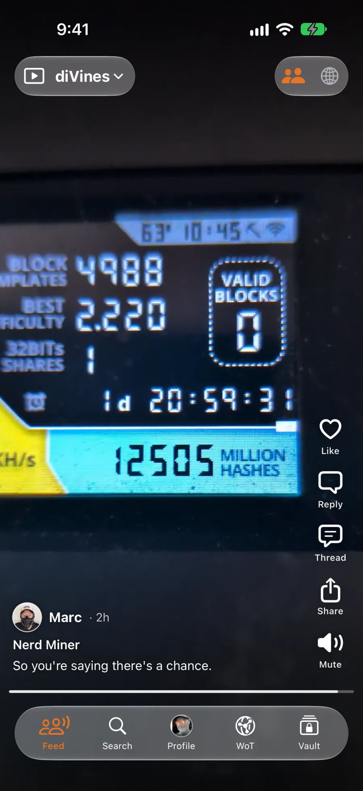
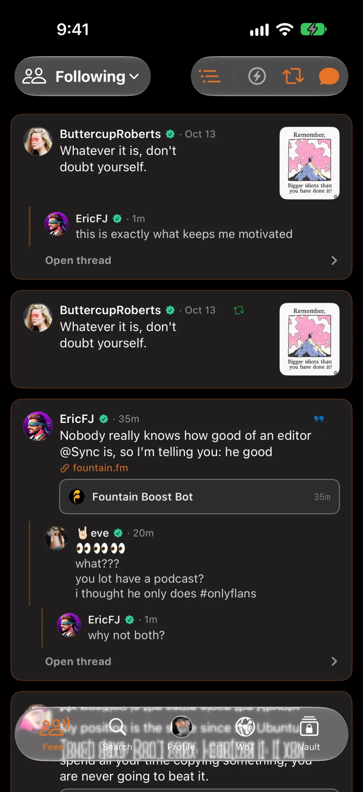
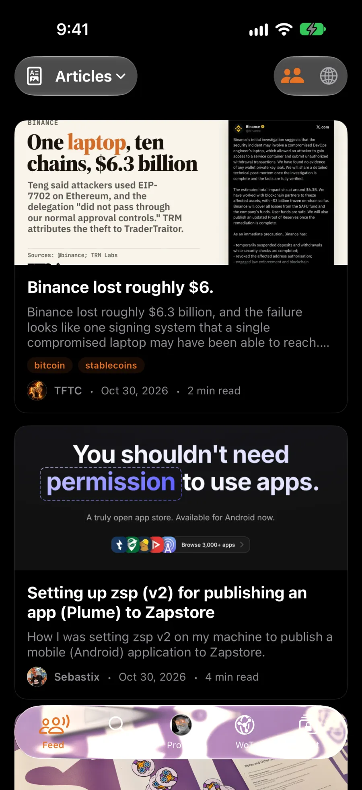
That's the real web app in the phone. Try it.
Watch · 30 seconds each
Web of Trust
Every account on Nostr sits somewhere in your follow graph. Nostr Vault draws it as a globe: you at the centre, and an orange thread for every follow you already trust.
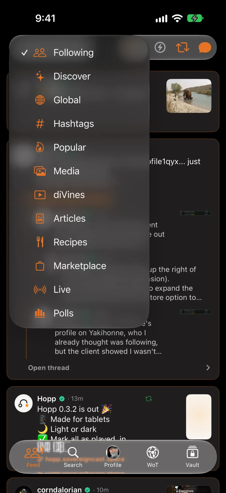
Complete control
Each feed has its own guard, so nothing from Global slips into a feed where you didn't ask for it. Reorder the feeds, or hide the ones you don't use.
In your browser
The web app runs your vault inside the page, so your notes are kept in your browser, not on our server. Sign in with an extension or a bunker and your key stays with your signer. Or just look around with any name or npub.
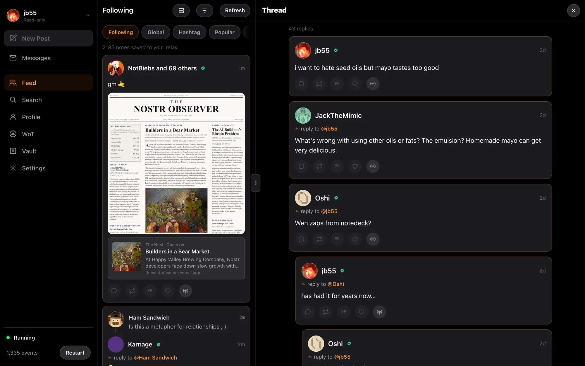
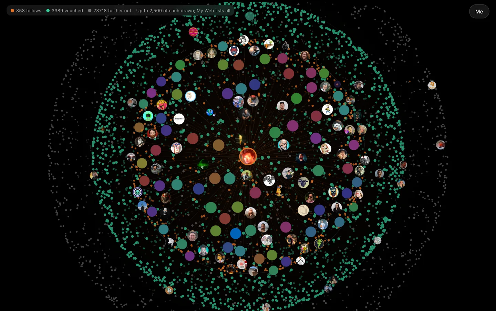
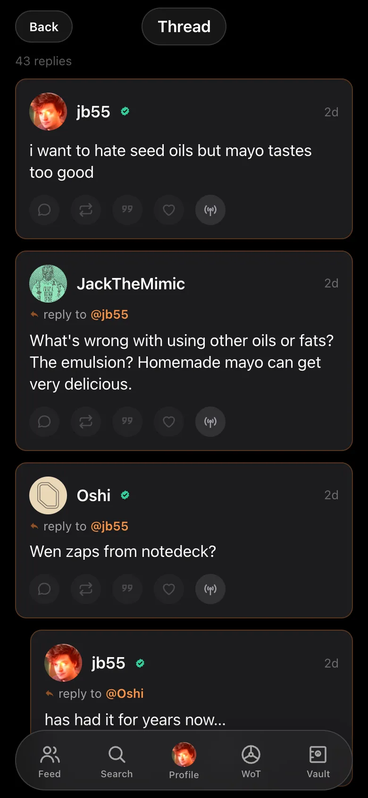
Watch
Every note you post today lives on somebody else’s relay. Nostr Vault runs one on your own device, keeps your posts, chats and media there first, and keeps your key encrypted with NIP-49 or out of the app entirely with a NIP-46 bunker.
See the screens →What’s inside
Global feeds are filtered by the trust graph of your follows, so you see people your graph can vouch for instead of the raw firehose. Language filters, mute-list sync and per-account block lists round it out.
Every post has Report and Block in its menu. A block hides that account in every feed and is added to your Nostr mute list, so it follows you to other apps.
The same battle-tested Go relay that powers the Haven CLI is compiled into the app as a static library. One process, no helpers, no server to rent. Your notes are stored on your device first and sent to the relays you choose from there.
Your nsec is encrypted with NIP-49 and the password lives in the system Keychain. Prefer to keep the key off the device entirely? Pair a NIP-46 remote signer by scanning its bunker QR code, on iPhone and Android.
Photos and videos you post are kept in your own media library on the device and copied to the media servers you choose. Paste an image into the composer and it lands on your own storage.
DMs, mentions, replies, reactions and reposts are generated on-device from your own relay stream. No push server, no third party, selectable sounds, and taps that open the right note.
Feed Glance, Quick Actions, Mosaic and Lock Screen widgets on iOS and iPadOS, with home-screen widgets on Android too. On iPad the feed and relay become true columns with a draggable divider.
SwiftUI on iPhone, iPad and Mac. Jetpack Compose on Android. One motion vocabulary that honours Reduce Motion, a GIF keyboard in the composer, and a menu-bar status panel on the Mac.
Every line of every app is on GitHub. Read how your feeds are filtered, build it yourself, or check that the build you run is the code you read.
Screens
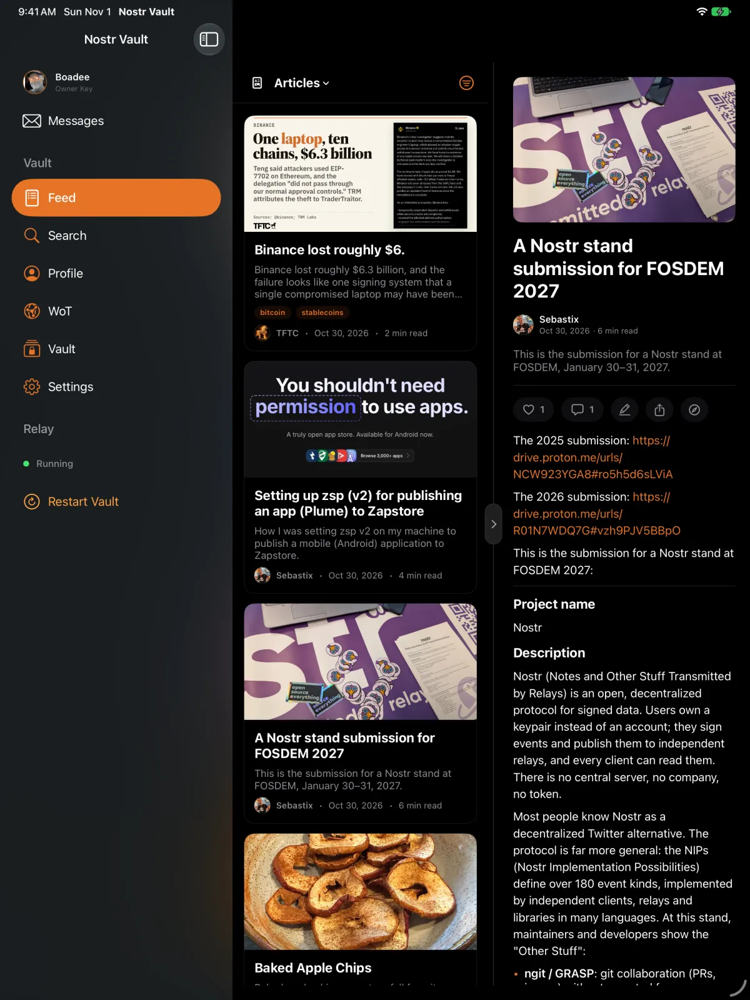
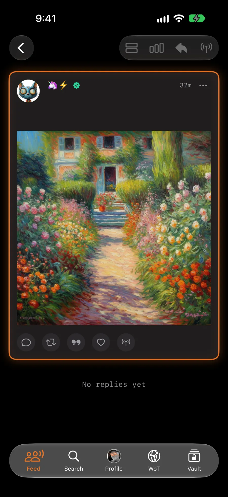
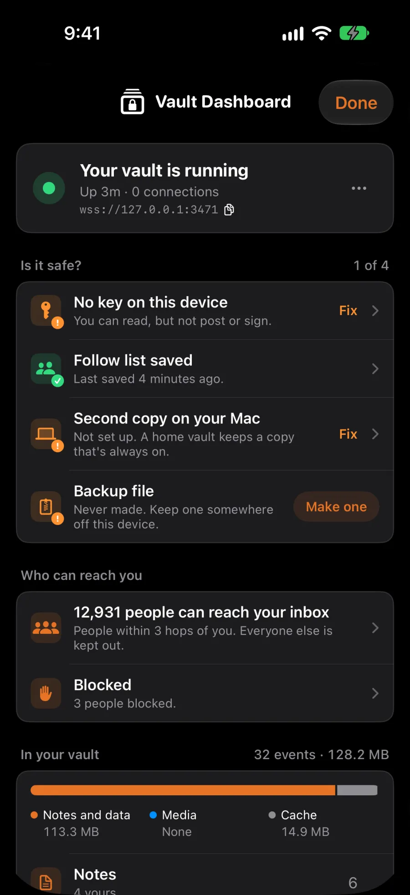
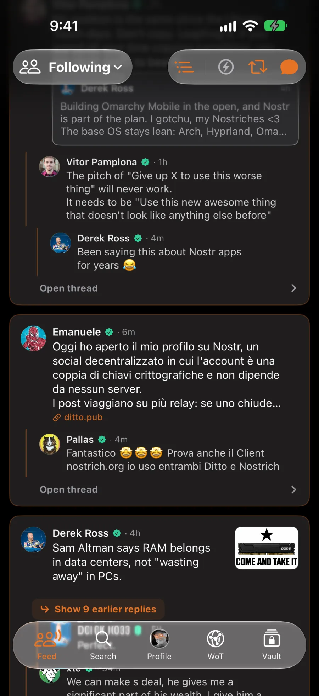
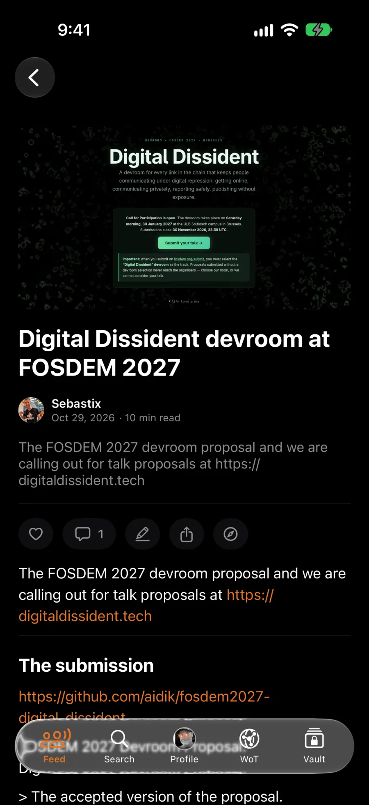
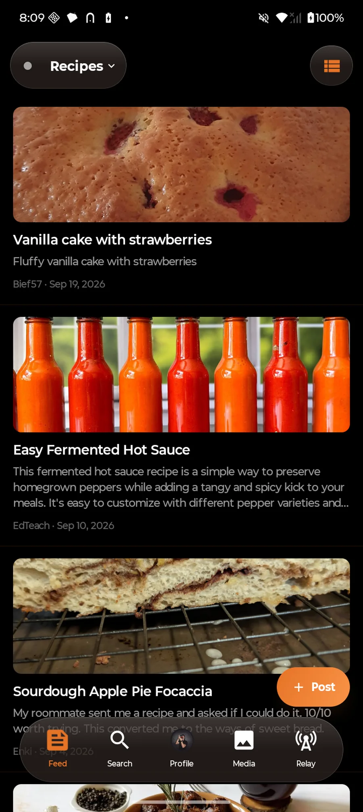
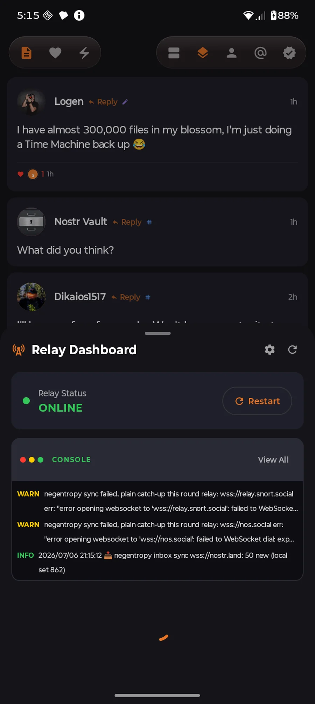
Two ways to run it
Every build carries the full relay. What changes is who can reach it.
Your device keeps a complete copy of your notes, media and lists, and pushes everything out to the relays you configure. Nothing on the network can reach in to read from your phone, so it is a private backup and a megaphone rather than a public address. On Android you can even swap in another on-device relay such as Citrine.
Run it 24/7 on a Mac with a real URL like relay.yourdomain.com, and anyone can connect
to read your notes: your own phone, your friends, other relays. Set the Mac as a relay in the mobile
app and it syncs your full history once, then keeps you current. Push and pull. Your own
devices can also reach each other over a private mesh.
Export your notes as JSONL and your media as files, straight from the Vault Dashboard. Import them on another phone or an iPad and your vault is back, nothing lost. No account to recover, no server to ask.
Native on iPhone, iPad, Mac and Android, and in any browser. Encrypted by default. Verifiable from source.